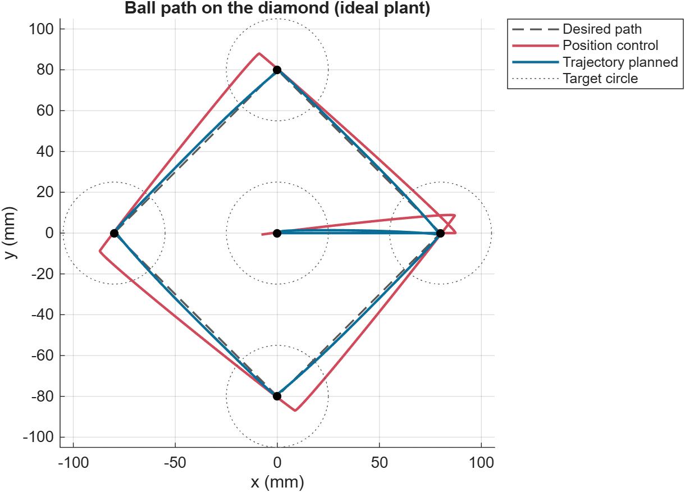
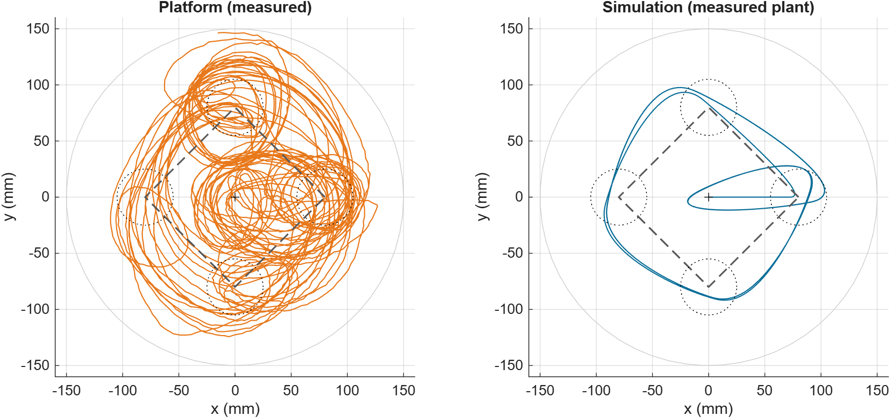

Course project · MTE 380 · Nov 2026 · Team build
Stewart Platform Ball Balancer
A three-servo Stewart platform tilts a 300 mm plate while a camera tracks a ping-pong ball. I measured the plant from our own logs, retuned the balancing loop, and wrote a waypoint planner, then checked which of its gains survived on the real plate.
The system
- Mechanism: three servos on an Arduino Mega with a PCA9685 servo driver, tilting a 300 mm plate through inverse kinematics.
- Sensing: a camera above the plate finds an orange ping-pong ball by colour with OpenCV.
- Control: Python closes the loop on every camera frame (up to 30 Hz) and sends servo angles over serial.
Why the ball spiralled outward
Early runs orbited the centre and grew until the ball left the plate. Instead of guessing at
gains, I wrote analyze_log.py to fit the logs and measure the plant directly:
about 0.2 s of dead time between a command and the ball responding (camera,
serial and servos together), a ball gain of 0.070 m/s² per commanded degree, and a plate about
1° off level at neutral. The camera axes and kinematics checked out; the gains did not. With
that much delay, the gains in use (about Kp 75, Ki 10, Kd 50) had a phase margin of roughly −13°,
so any small motion grew into an orbit.
- Retuned to Kp 20, Ki 8, Kd 25, about 34° of phase margin on the measured plant.
- Ran the controller on every frame instead of at 10.6 Hz, shortened the derivative filter, and added an integral term with real anti-windup so it could cancel the level error.
- Changed the Arduino sketch to 115200 baud and tenths of a degree, since whole-degree servo steps were about 0.7° of plate tilt each.
- Added level trim, a short grace period for a missed detection, and an acknowledgement from the Arduino before balancing starts.
After tuning on the plate, the ball held a median 7–14 mm from the centre across four stretches of 13–65 s.
A waypoint planner
The next goal was moving the ball around a diamond of waypoints without overshooting them. The planner is built on the team's model, x″ = (3/5)·g·θ for a rolling hollow ball, and a stopping distance d = v² / 2a. Each move has three phases: accelerate with a timed tilt, coast at a capped speed, then brake once the stopping distance reaches the distance left. Braking is recalculated every frame from the measured speed, with the ball's position projected one dead time ahead.

Simulation against the plate
Both strategies were simulated in MATLAB with the same gains, first on the ideal model and then on the plant measured from the plate (0.092 m/s² per degree, 0.23 s dead time).
| Mean overshoot past a waypoint | Position control | Planned |
|---|---|---|
| Ideal model | 10.0 mm | 0.0 mm |
| Measured plant | 33.8 mm | 11.3 mm |
| Measured plant, gentler braking (0.06 m/s²) | 33.8 mm | 0.0 mm |
On the real plate, the run that worked reached 91 waypoints in 171 s with a mean overshoot of 27 mm, and a simulation of the same configuration predicted 27 mm. That agreement supports the measured model. It does not show the planner working: the planner only starts a move from rest, the ball almost never came to rest, so the accelerate and brake phases ran for under 1% of that run. The diamond was traced by position feedback with touch-and-go waypoints.

Why the first planner runs struggled
- A resting ball ignores small tilts. In the logs, a stationary ball almost never started rolling within 0.5 s below about 2° of net tilt. We put it down to the ball's uneven mass; servo backlash was not ruled out.
- Dead time. At 0.08 m/s the ball travels 18 mm before a command takes effect, comparable to the 27 mm planned braking distance.
- The plate is not level, and the error changed between sessions, up to about 2°. One degree is 0.09 m/s², close to the whole planned braking deceleration.
Planner against PID on the plate, same gains
On 17 November we ran both strategies around the diamond with the same gains (Kp 28.5, Ki 2.5, Kd 24.5): one run with plain PID stepping between waypoints, one with the planner. This time the planner's accelerate, coast and brake phases ran about 10% of the time, against well under 1% in the 12 November run.
| Measured on the plate | PID | Planner |
|---|---|---|
| Mean overshoot past a waypoint | 18.0 mm | 5.9 mm |
| Worst overshoot | 40.0 mm | 24.9 mm |
| Median distance from the diamond | 24.8 mm | 19.4 mm |
| Furthest from the centre (edge at 150 mm) | 124 mm | 100 mm |
| Waypoint moves in the run | 18 | 9 |
Overshoot is measured the same way as in the report: the furthest the ball travels past a waypoint along its direction of approach. The planner run is short, 36 s and nine moves against the PID run's 128 s and eighteen, so this is one encouraging result rather than a settled one. The ball path drawn at the top of the home page is this planner run.
Still open
A planner run as long as the PID run, to check the result holds over more waypoint moves, and the same comparison with the ball required to rest at each waypoint, to match the simulation.